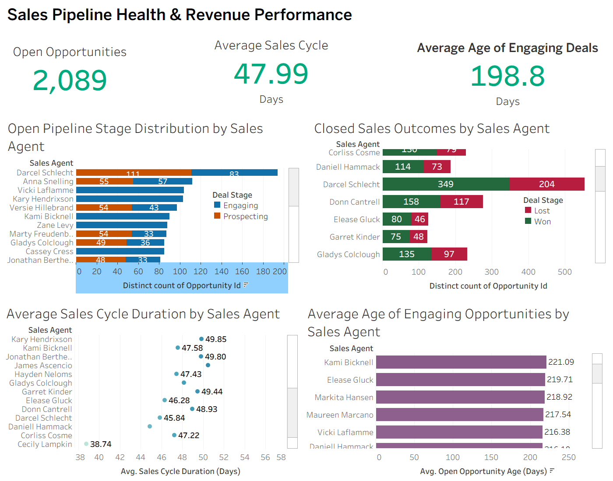

Sales Pipeline Health & Revenue Performance
Beyond opportunity counts: evaluating sales effectiveness, pipeline aging, and revenue to uncover actionable questions for sales leadership.
The business question
How healthy is the open sales pipeline, and what do historical conversion, sales-cycle, and revenue patterns reveal about opportunities for operational improvement?
Using the Maven Analytics CRM Sales Opportunities dataset, I examined opportunity volume, historical outcomes, duration, aging and recorded closed-won revenue. My background in sales and business development informed the questions I asked and the recommendations I developed.
Revenue uses the dataset's recorded close-value units; the source does not independently establish a currency. Aging is measured against December 31, 2017.
The insight that changed my interpretation
Darcel Schlecht initially stood out because he managed 194 open opportunities—the largest open pipeline. I questioned whether that volume indicated difficulty closing deals. The revenue analysis challenged that assumption.
Darcel led all 30 agents in recorded closed-won revenue, generating 1,153,214 source units (11.53% of the total), with 349 wins and an average sales cycle of 45.84 days. A large open pipeline coexisted with strong historical results.
From a workload concern to a collaboration hypothesis
I proposed investigating whether a qualified colleague with fewer open opportunities could support Darcel without disrupting customer relationships or overlooking his contribution to existing deals.
Comparing two agents
| Measure | Darcel Schlecht | Wilburn Farren |
|---|---|---|
| Open opportunities | 194 | 31 |
| Won / Lost | 349 / 204 | 55 / 24 |
| Historical win rate | 63.11% | 69.62% |
| Average sales cycle | 45.84 days | 52.00 days |
Wilburn has approximately 84% fewer open opportunities and a historical win rate 6.51 percentage points higher. But his much smaller sample of closed deals and longer average cycle limit the comparison. Fewer open records do not prove spare capacity, and a higher win rate does not prove superior overall performance.
Aging deserves investigation—not assumptions
Open opportunities account for 23.7% of the 8,800 records. Engaging opportunities average 198.8 days old, more than four times the 47.99-day average completed sales cycle. Because these averages describe different populations, the contrast is a signal for review, not proof that particular deals are stalled.
Visualizing pipeline health and revenue
Two Tableau views support an executive discussion: an operational dashboard with three KPIs and four agent-level views, and a ranked revenue chart to add financial context.


Recommendations for sales leadership
Review aging opportunities
Examine Engaging opportunities for current activity, follow-up needs and requalification candidates. Establish context-sensitive aging thresholds and review exceptions regularly.
Pilot targeted sales collaboration
Assess Darcel and Wilburn's actual capacity, product expertise and customer fit before selecting a small pilot cohort. Consider early Prospecting reassignment and collaborative support for established Engaging relationships. Preserve customer continuity and recognize prior salesperson contributions; where policy permits, compensation should reflect the original agent's investment.
Track conversion, cycle duration, aging, incremental closed-won revenue, customer continuity and commission costs against a baseline, comparing with similar non-pilot opportunities where feasible.
Strengthen CRM reporting
Capture estimated deal values, expected close dates, activity histories and workload indicators to support forecasting and better capacity assessment.
The collaboration proposal has not been implemented or tested. No resulting revenue increase or causal improvement has been measured.
Method, validation & limitations
Source and scope. Maven Analytics' simulated CRM Sales Opportunities dataset contains 8,800 pipeline records plus reference tables for accounts, products and sales teams. This Tableau analysis uses the pipeline table alone, without joins or source-table cleaning.
Measures. Open pipeline is Prospecting plus Engaging; closed outcomes are Won plus Lost. Win rate is Won ÷ (Won + Lost). Sales cycle is the average number of days between engagement and closing for closed deals. Engaging age uses December 31, 2017 as a fixed historical reference date. Revenue sums recorded close values for Won opportunities only.
Validation. An AI-assisted source audit found 8,800 unique opportunity IDs, no exact duplicate rows and no negative engagement-to-close durations. The Tableau Revenue Validation worksheet confirmed 4,238 distinct Won opportunities and the revenue calculation reconciled to 10,005,534.
Limitations. Open opportunities have no close values; estimated deal values, expected close dates, probabilities, quotas, complete stage histories and activity histories are unavailable. Therefore the project does not estimate open pipeline dollar value, weighted forecasts, quota attainment or actual effects of an intervention.
Data quality considerations. The audit identified inconsistent product spelling (GTXPro / GTX Pro), missing account names on some open records and a sector spelling issue. These are documented findings, not claims that the underlying data was corrected.
My contribution. I developed the business questions, proposed count-based open pipeline assessment, built Tableau visualizations with guidance, performed revenue aggregation and validation, and independently proposed and investigated the Darcel–Wilburn collaboration. AI assisted the source audit, technical guidance, workbook inspection and written presentation.
Dataset: Maven Analytics — CRM Sales Opportunities (historical simulated data, 2016–2017). Educational framework: Google Data Analytics Course 8 case study roadmap. Raw data and workbook extracts are not distributed here pending verification of redistribution terms.
← Return to portfolio